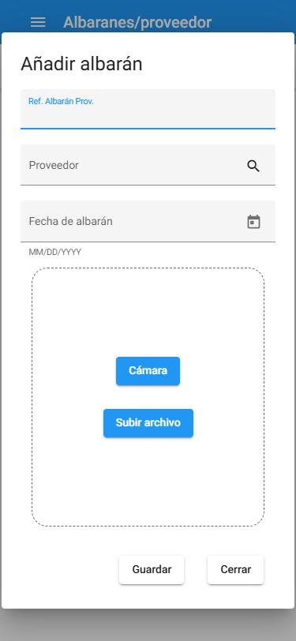

Albaranes desde el móvil
Quien recibe la mercancía puede registrar el albarán en el momento, desde el móvil, con una foto. Después, en la oficina, se completan las líneas y la imputación a proyectos.

- Entra en la aplicación desde el navegador del móvil y abre Albaranes/proveedor en el menú. Al detectar el móvil, se muestra una versión adaptada.
- Pulsa Añadir.
- Escribe la Ref. Albarán Prov., elige el Proveedor con la lupa y la Fecha de albarán.
- Pulsa Cámara y haz la foto del albarán, o Subir archivo si ya la tienes.
- Pulsa Guardar.
En el listado del móvil verás los albaranes del periodo elegido (despliega la flecha de arriba para cambiarlo). Los albaranes ya completados aparecen marcados.
NotaDespués, en el ordenador, abre el albarán en Alb. de proveedor y añade sus líneas. Ver Registrar un albarán de proveedor.